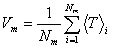
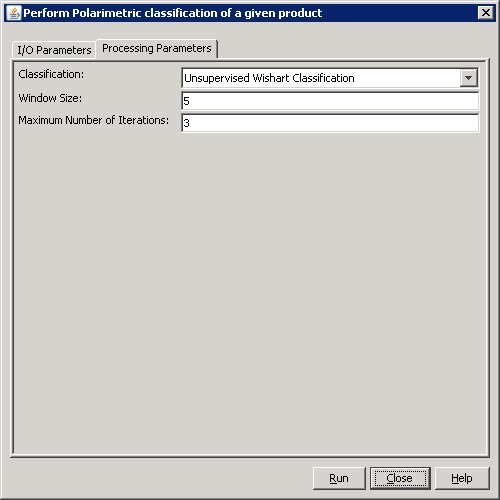

Polarimetric Classification Operator
This operator performs the following polarimetric classification for a full polarimetric SAR product:
- Unsupervised Cloude-Pottier Classification
- Unsupervised Whishart Classification
Unsupervised Cloude-Pottier Classification
The Cloude-Pottier classification is an unsupervised
classification scheme which is based on the use of the Entropy (H) /
Alpha (α)
plane. Entropy by definition is a natural measure of the inherent
reversibility of the scattering data while alpha can be used to
identify the underlying average scattering mechanisms. The H / Alpha
plane is divided into nine zones corresponding to nine classes of
different scattering mechanisms. For each pixel in the source product,
its entropy and alpha angle are computed. Based on the position of the
computed entropy and alpha in the H / Alpha plane, the pixel is
classified into one of the nine zones, a zone index is assigned to the
pixel. For detail calculations of entropy and alpha, readers are
referred to on-line help for Polarimetric Decomposition operator.
Figure 1 shows the locations and boundaries of the nine zones in H /
Alpha plane:

Figure 1. H / Alpha plane
Unsupervised Wishart Classification
Similar to the
Cloude-Pottier classification, the unsupervised Wishart classification
also separates data into nine clusters using the zones defined in
the H / Alpha plane above. Different from the Cloude-Pottier
classification, the Wishart classification will continue to compute the
centres of the nine clusters, then reclassify the pixels based on their
Wishart distances to cluster centres. This procedure will repeat
several time until the user defined total number of
iterations is reached. To achieve accurate classification result, speckle filtering must be applied before the classification.
The cluster centre Vm for the mth cluster is the average of the coherency matrices of all pixels in the cluster. Mathematically it is given by

The Wishart distance measure from coherency matrix T to cluster centre Vm is defined as the following:
where ln() is the natural logarithm function, |.| and
Tr(.) indicate the determinant and the trace of the matrix respectively.
Unsupervised Freeman-Durden Wishart Classification
Similar to the unsupervised Wishart classification method
above this method is also a Wishart distance based classification.
Instead of applying Wishart classification to clusters formed by
H/Alpha decomposition, this method applys Wishart classification to
clusters in each catgory of the Freeman-Durden decomposition.
First Freeman-Durden decomposition is performed on speckle
filtered quad-pol image. Then 30 clusters are created in each of the
three categories (volume, double-bounce and surface) with approximately
equal number of pixels in the clusters. The clusters in each category
are then merged based on the Wishart distance between clusters. The
merge process is repeated until user specified number of clusters is
reached. Finally Wishart classification is applied to clusters in each
category to classify pixels in the category.
Input and Output
- The
input to this operator can be covariance
matrix or coherency
matrix generated by Polarimetric Matrix Generation operator.
- The output of this operator is a band with pixel values being the cluster indices.
Parameters Used
For Cloude-Pottier classification, the following processing parameter are needed (see Figure 2):
- Classification: the classification method
- Window Size: dimension of sliding window for computing mean covariance or coherency matrix

Figure 2. Dialog box for Unsupervised Cloude-Pottier classification
For Unsupervised Wishart classification, the following parameters are used (see Figure 3):
- Classification: the classification method
- Window Size: dimension of sliding window for computing mean covariance or coherency matrix
- Maximum Number of Iterations: the maximum number of iterations

Figure 3. Dialog box for Unsupervised Wishart classification
For Unsupervised Freeman-Durden Wishart classification, the following parameters are used (see Figure 4):
- Classification: the classification method
- Window Size: dimension of sliding window for computing mean covariance or coherency matrix
- Initial Number of Classes: the initial number of clusters
- Final Number of Classes: the final number of classes after classification
- Threshold for Mixed Category: the threshold used in classifying
pixels to the mixed category. The Freeman-Durden decomposition computes
for each pixel the contribution of three scattering mechanisms: volume,
surface and double-bounce. Based on the dominant value of the three
categories, the pixel is classified to one of the categories. But for
some pixels, there is no obvious dominant value, in this case the pixel
is classified to the mixed category. Say the pixel has values Pv, Ps
and Pd for the three categories, if max(Pv, Ps, Pd) / (Pv + Ps + Pd)
<= this threshold, it is classified to the mixed category.

Figure 4. Dialog box for Unsupervised Freeman-Durden Wishart classification
Reference:
[1] J.S. Lee and E. Pottier, Polarimetric Radar Imaging: From Basics to Applications, CRC Press, 2009
[2] J.S. Lee, M.R. Grunes, and E. Pottier, "Unsupervised terrain
classification preserving polarimetric scattering characteristics",
IEEE Transaction on Geoscience and Remote Sensing, Vol. 42, No. 4,
April 2004.